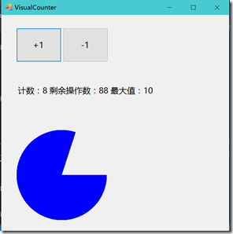

© 2019 《算法（第四版）》C# 题解 | Provided By 沈星繁
搜索解答
目前已完成到 2.5
1.2.10
上次更新：2019-02-11
题目
1.2.10 编写一个类 VisualCounter，支持加一和减一操作。 它的构造函数接受两个参数 N 和 max，其中 N 指定了操作的最大次数， max 指定了计数器的最大绝对值。 作为副作用，用图像显示每次计数器变化后的值。
解答
在 Counter 类基础上修改即可。

代码
VisualCounter 类
using System.Drawing;
namespace _1._2._10
{
/// <summary>
/// 可视化计数器
/// </summary>
class VisualCounter
{
private readonly string name;
private int count;
private int max;
private int operatorTimes;
/// <summary>
/// 构造函数。
/// </summary>
/// <param name="id">计数器的名称。</param>
/// <param name="max">计数器的最大值。</param>
/// <param name="operatorTimes">计数器的最大操作数。</param>
public VisualCounter(string id, int max, int operatorTimes)
{
this.name = id;
this.max = max;
this.operatorTimes = operatorTimes;
}
/// <summary>
/// 计数器加一。
/// </summary>
public bool Increment()
{
if (operatorTimes <= 0)
return false;
if (count < max)
{
count++;
operatorTimes--;
}
return true;
}
/// <summary>
/// 计数器减一。
/// </summary>
public bool Decreasement()
{
if (operatorTimes <= 0)
return false;
if (count > 0)
{
count--;
operatorTimes--;
}
return true;
}
/// <summary>
/// 获取当前计数值。
/// </summary>
/// <returns></returns>
public int Tally()
{
return count;
}
/// <summary>
/// 输出形如 “1 counter” 的字符串。
/// </summary>
/// <returns></returns>
public override string ToString()
{
return count + " " + name;
}
/// <summary>
/// 绘制计数器的图形。
/// </summary>
/// <param name="g">画布。</param>
/// <param name="width">绘图区宽度。</param>
/// <param name="height">绘图区高度。</param>
/// <param name="font">显示的字体。</param>
public void Draw(Graphics g, int width, int height, Font font)
{
//清空画布
g.Clear(SystemColors.Control);
//将画布分为上 1/3 和下 2/3
RectangleF headPart = new RectangleF(0, 0, width, height / 3);
Rectangle bodyPart = new Rectangle(0, height / 3, (height * 2) / 3, (height * 2) / 3);
//绘图
g.DrawString($"计数：{count} 剩余操作数：{operatorTimes} 最大值：{max}", font, Brushes.Black, headPart);
g.FillPie(Brushes.Blue, bodyPart, 0, 360 * (float)count / max);
}
}
}Form2
using System;
using System.Drawing;
using System.Windows.Forms;
namespace _1._2._10
{
public partial class Form2 : Form
{
VisualCounter counter;
Graphics graphics;
public Form2(int N, int max)
{
InitializeComponent();
counter = new VisualCounter("count", max, N);
graphics = this.PaintArea.CreateGraphics();
}
private void button1_Click(object sender, EventArgs e)
{
if (!counter.Increment())
{
this.ErrorLabel.Text = "操作数不足";
}
else
{
this.ErrorLabel.Text = "";
counter.Draw(graphics,this.PaintArea.Width, this.PaintArea.Height, this.Font);
}
}
private void button2_Click(object sender, EventArgs e)
{
if (!counter.Decreasement())
{
this.ErrorLabel.Text = "操作数不足";
}
else
{
this.ErrorLabel.Text = "";
counter.Draw(graphics, this.PaintArea.Width, this.PaintArea.Height, this.Font);
}
}
}
}